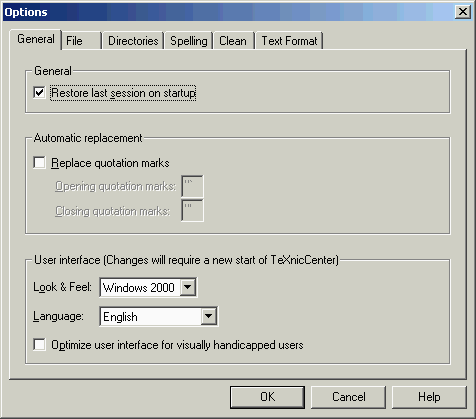

The tab 'General' in the dialog
'Options' allows users to set
general
options for TeXnicCenter'.

The meaning of the controls is:
- 'Restore last session on start up'
- If this option is enabled, then when TeXnicCenter starts up
it will reload the project and
any files that were open before TeXnicCenter was closed the last time.
- 'Replace quotation marks (")'
- If this option is enabled, TeXnicCenter will do two related
things:
- it will replace opening quotation marks with the string
specified
by 'opening quotation mark' and
- it will replace closing quotation marks with the string
specified
by 'closing quotation mark'
when the user types the quotation mark (") character.
- 'Look and Feel'
- The choices are Windows 2000, Office XP, Windows XP, and Office
2003
- 'Language'
- The choices are English and Deutsch (German)
- 'Optimize user interface for visually handicapped users'
- Improves the visibility of some of the features of TeXnicCenter.